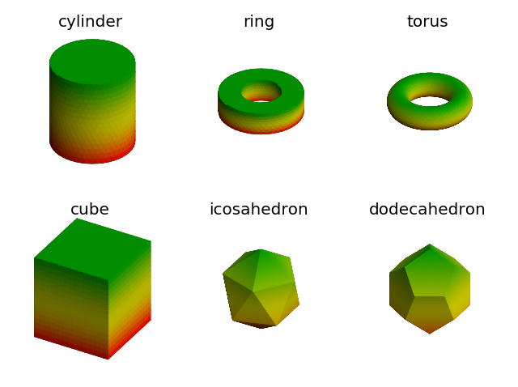

Intermediate Surfaces¶
It may be the case for complex surfaces to first construct an intermediate surface through mapping, then apply additional functional mapping. This technique was used in numerous examples. This set of surfaces demonstrates the construction of simple intermediate surfaces.
The first set of surfaces on the top row were all constructed by geometric mapping a CylindricalSurface object. As a result, the surfaces all have cylindrical coordinates as their native coordinate system.
The second set of surfaces on the bottom row were all constructed using the base class Surface3DCollection. The object was instantiated by passing vertex coordinates and face indices to the base class constructor. This was followed by increasing the surface rez using the triangulate method. The coordinates and indices can either be directly constructed, as was the case for the ‘cube’, or accessed from the subclass SphericalSurface, as was the case for the ‘icosahedron’ and ‘dodecahedron’. Since these surfaces are of class Surface3DCollection, the native coordinates are xyz coordinates.
Note that when a colormap is applied to all surfaces in the highlighted line, the z coordinate was used since this is the same for all the native coordinates for these different objects.
import numpy as np
import matplotlib.pyplot as plt
import s3dlib.surface as s3d
import s3dlib.cmap_utilities as cmu
#.. Intermediate Surfaces
# 1. Define functions to examine ....................................
def Ring(rez, width=.5, height=.5) :
# .....................................................
def fold(rtz,width,height) :
r,t,z = rtz
zeros = np.zeros(len(z))
width_ar = np.full(len(z),width)
# fold the cylinder into 4 parts..
alpha = -2*width*z+width
alpha = np.where( z <= 0.5, zeros , alpha )
alpha = np.where( z <= 0.0, 2*width*z , alpha )
alpha = np.where( z <= -.5, -width_ar , alpha )
beta = height
beta = np.where( z <= 0.5, 2*height*z, beta)
beta = np.where( z <= 0.0, zeros, beta)
beta = np.where( z <= -.5, -2*height*z-height, beta)
R = r + alpha
Z = beta - height/2
return R,t,Z
# .....................................................
surface = s3d.CylindricalSurface(rez)
surface.map_geom_from_op( lambda rtz : fold(rtz,width,height) )
surface.name = 'ring'
return surface
def Cylinder(rez) :
# .....................................................
def fold(rtz) :
r,t,z = rtz
zeros = np.zeros(len(z))
ones = np.ones(len(z))
# fold the cylinder into 3 parts..
alpha = -2*z + 2
alpha = 2*(ones-z)
alpha = np.where( z <= 0.5, ones , alpha )
alpha = np.where( z <= -.5, 2*(ones+z) , alpha )
beta = ones
beta = np.where( z <= 0.5, 2*z , beta)
beta = np.where( z <= -.5, -ones, beta)
R = np.clip(alpha,0.001,1)
Z = beta
return R,t,Z
# .....................................................
surface = s3d.CylindricalSurface(rez)
surface.map_geom_from_op( lambda rtz : fold(rtz) )
surface.name = 'cylinder'
return surface
def Torus(rez,ratio=.5) :
# .....................................................
def fold(rtz,ratio) :
r,t,z = rtz
c = (1 + ratio)/2
d = (1 - ratio)/2
Z = d*np.sin(z*np.pi)
R = (c + d*np.cos(z*np.pi))
return R,t,Z
# .....................................................
surface = s3d.CylindricalSurface(rez)
surface.map_geom_from_op( lambda rtz : fold(rtz,ratio) )
surface.name = 'torus'
return surface
def Cube(rez) :
v = [
[ 0, 0, 0 ], [ 0, 1, 0 ], [ 1 , 1, 0 ], [ 1, 0, 0 ],
[ 0, 0, 1 ], [ 0, 1, 1 ], [ 1 , 1, 1 ], [ 1, 0, 1 ] ]
f = [ [0,1,2,3], [3,2,6,7], [2,1,5,6], [1,0,4,5], [0,3,7,4], [4,7,6,5] ]
vertexCoor = np.array(v).astype(float)
faceIndices = np.array(f)
surface = s3d.Surface3DCollection(vertexCoor, faceIndices)
surface.transform(scale=2, translate=[-1,-1,-1])
surface.triangulate(rez)
surface.name = 'cube'
return surface
def Icosahedron(rez) :
t = s3d.SphericalSurface()
surface = s3d.Surface3DCollection(t.vertexCoor, t.fvIndices)
surface.triangulate(rez)
surface.name = 'icosahedron'
return surface
def Dodecahedron(rez) :
v,f = s3d.SphericalSurface.get_dodecahedron()
surface = s3d.Surface3DCollection(v,f)
surface.triangulate(rez)
surface.name = 'dodecahedron'
return surface
# 2. Setup and map surfaces .........................................
rez=4
cmap = cmu.hsv_cmap_gradient( [0,1,1], [0.333,1,.65], smooth=1.6 )
surfaces = [ Cylinder(rez), Ring(rez), Torus(rez),
Cube(rez), Icosahedron(rez), Dodecahedron(rez) ]
# 3. Construct figure, add surfaces, and plot ......................
fig = plt.figure()
for i in range(6) :
ax = fig.add_subplot(231+i, projection='3d')
ax.set(xlim=(-1, 1), ylim=(-1, 1), zlim=(-1, 1))
surface = surfaces[i]
surface.map_cmap_from_op( lambda abc : abc[2], cmap).shade()
ax.set_title(surface.name, fontsize='x-large')
ax.set_axis_off()
ax.set_proj_type('ortho')
ax.add_collection3d(surface)
fig.tight_layout()
plt.show()